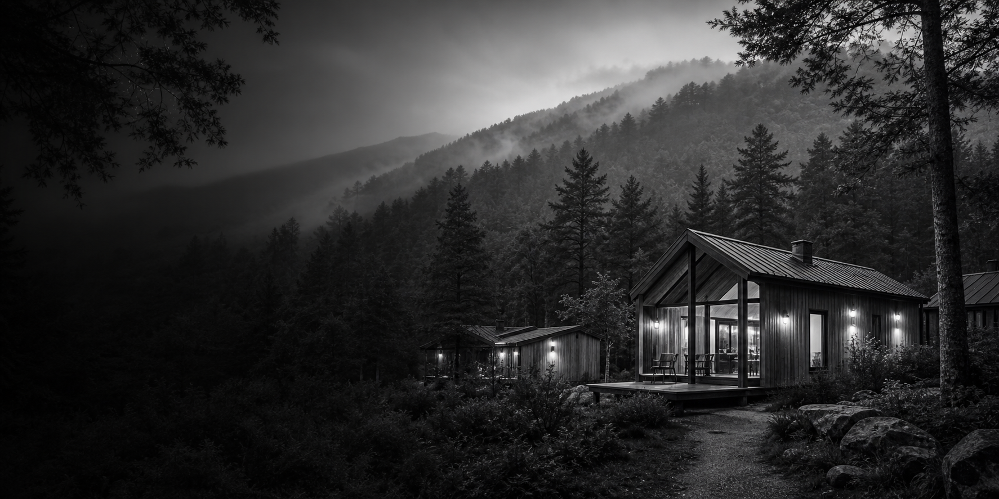
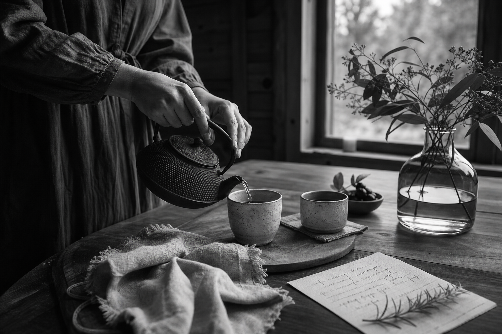

Один частный дом
Без корпусов и случайного потока гостей: вы выбираете комнату и приезжаете в камерное место.

Лукьяновка
Маори - не безликая база отдыха, а частный дом у сопок. Его держит Катерина Геращенко: встречает гостей, помогает устроиться и сохраняет ощущение спокойного приезда к своим.
В Маори гости выбирают комнату, а не отдельное строение. Общий смысл места - камерность, внимание хозяйки и ощущение, что вечером можно выдохнуть без расписания и лишнего шума.

лично
На сайте теперь главный акцент не на аренде, а на хозяйском присутствии: кто встретит, кто подскажет, где пройтись, где отдохнуть вечером и как устроиться без суеты.
Познакомиться с хозяйкойБез корпусов и случайного потока гостей: вы выбираете комнату и приезжаете в камерное место.
Катерина уточняет даты, состав гостей, пожелания по комнате и бытовые детали до приезда.
Маори подходит тем, кто хочет выдохнуть, погулять у сопок и вернуться в теплый дом.
Главный путь гостя сделан простым: заявка, короткое уточнение, подтверждение и спокойный приезд.
Выбираете даты, комнату, количество гостей и оставляете комментарий для Катерины.
Свободные даты, состав гостей, пожелания по комнате и бытовые вопросы обсуждаются лично.
После согласования условий вы понимаете, куда и к кому едете, без ощущения безликой системы.
Вас встречают, показывают пространство и оставляют отдыхать в своем ритме.
Сайт разделен на страницы, чтобы Маори ощущался как цельный дом, а не длинная витрина.
Бронь